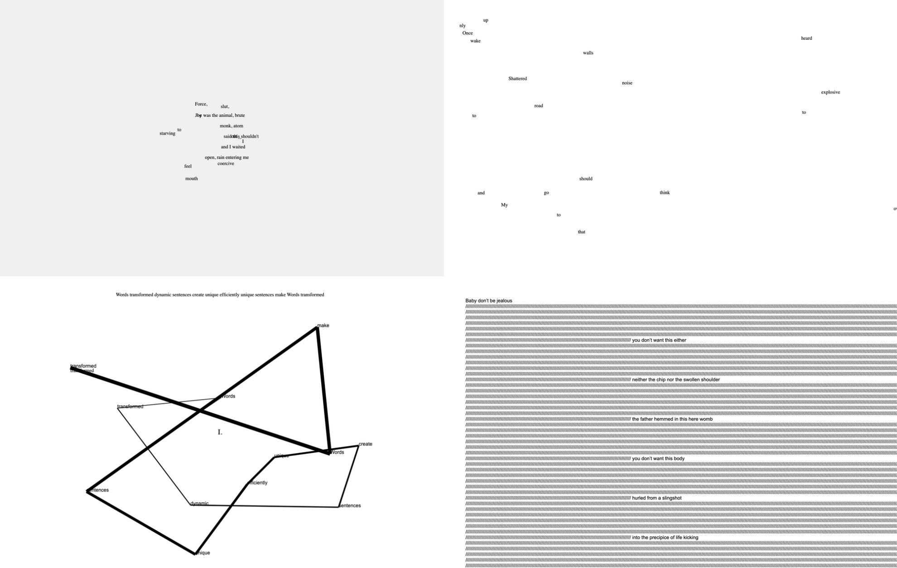

oulipo.xyz

oulipo.xyz is my sister site. I think of it as the Kitchen Lab. A place to keep the small pieces loose, the prototypes still warm, the experiments that don’t need a catalog entry to be worth visiting. The catalog you are reading right now is the dressier room. The Kitchen Lab is the room where the apron stays on.
The pieces that live there move in their own time. Some are browser instruments I open when I’m writing. Some are dispatches. Some are old promises I keep visiting until they become finished. The point is to keep making, not to keep filing. The Kitchen Lab refuses the impulse to neaten the work into rows.
Currently in the lab: Phenomenal Fields, Hover, Red Trail, Fleeting Joy, Bend Blushing Brainstorm Erasure, Don’t Be All Sorts of Things Reel, Bad Choose Defeat Me, Hit the Road, In and Out of You They Flee Me, Father Time. Each is a small instrument. Each was made to be played, not archived. Visit them at oulipo.xyz.